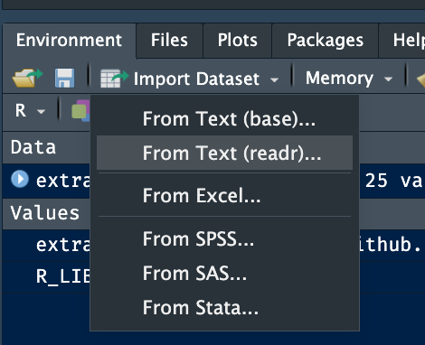

richtige_antwort = 42
falsche_antwort = 43
typ = "Antwort"
ist_korrekt = TRUE4 Daten einlesen
4.1 Lernsteuerung
Abb. Abbildung 1.3 den Standort dieses Kapitels im Lernpfad und gibt damit einen Überblick über das Thema dieses Kapitels im Kontext aller Kapitel.
4.1.1 Lernziele
- Sie können R und RStudio starten.
- Sie können R-Pakete installieren und starten.
- Sie können Variablen in R zuweisen und auslesen.
- Sie können Daten in R importieren.
- Sie können den Begriff Reproduzierbarkeit definieren.
4.1.2 Überblick
Abbildung 4.1 zeigt den typischen Lernverlauf in Zusammenhang mit Datenanalyse (und R) an: Es gibt Höhen und Tiefen. Die wechseln sich ab. Das ist ganz normal!

4.1.3 Ab diesem Kapitel benötigen Sie R
Bitte stellen Sie sicher, dass Sie R rechtzeitig einsatzbereit haben. Weiter unten in diesem Kapitel finden Sie Installationshinweise (Kapitel 4.3). Falls Sie dieses Kapitel zum ersten Mal bzw. sich noch nicht mit R auskennen, werden Sie vielleicht einigen Inhalten begegnen, die Sie noch nicht gleich verstehen. Keine Sorge, das ist normal. Mit etwas Übung wird Ihnen bald alles schnell von der Hand gehen.
4.2 Errrstkontakt
4.2.1 Warum R?
Gründe, die für den Einsatz von R sprechen:
🆓 R ist kostenlos, andere Softwarepakete für Datenanalyse sind teuer. 💸
📖 R und R-Befehle sind quelloffen, d.h. man kann sich die zugrundeliegenden Computerbefehle anschauen. Jeder kann prüfen, ob R vernünftig arbeitet. Alle können beitragen.
🆕 R hat die neuesten Methoden.
🫂 R hat eine große Community.
🪡 R ist maßgeschneidert für Datenanalyse.
Allerdings gibt es auch abweichende Meinungen, s. Abbildung 4.2.
4.2.2 R und Reproduzierbarkeit
Definition 4.1 (Reproduzierbarkeit) Ein (wissenschaftlicher) Befunde ist reproduzierbar, wenn andere Analystis mit dem gleichen experimentellen Setup zum gleichen Ergebnis (wie in der ursprünglichen Analyse) kommen (Plesser, 2018). \(\square\)
Definition 4.1 ist, etwas überspitzt, in Abbildung 4.3 wiedergegeben.
🔢 + 🤖 + 🔬 = 🤩
Beispiel 4.1 (Aus der Forschung: Reproduzierbarkeit in der Psychologie)
🧑‍🎓 Wie ist es um unsere Wissenschaft, Psychologie, bestellt? Haben die Befunde Hand und Fuß?
Obels et al. (2020) haben die Reproduzierbarkeit in psychologischen Studien untersucht. Sie berichten folgendes Ergebnis
We examined data and code sharing for Registered Reports published in the psychological literature from 2014 to 2018 and attempted to independently computationally reproduce the main results in each article. Of the 62 articles that met our inclusion criteria, 41 had data available, and 37 had analysis scripts available. Both data and code for 36 of the articles were shared. We could run the scripts for 31 analyses, and we reproduced the main results for 21 articles. \(\square\)
4.2.3 R & RStudio
Wenn wir sagen, “wir arbeiten mit R”, dann heißt das in unserem Fall “wir arbeiten mit R und mit RStudio”.


Ismay & Kim (2020) zeigen eine schöne Analogie, was der Unterschied von R und RStudio ist, s. Abbildung 4.5. (Streng genommen ist RStudio für die Datenanalyse irrelevant, aber RStudio ist praktisch, Sie werden es nicht missen wollen.)

Kurz gesagt: Das eigentlich Arbeiten besorgt R. Für den Komfort und die Schönheit ist RStudio zuständig. Auch eine Art von Arbeitsteilung! Hier sehen Sie einen Screenshot von der Oberfläche von RStudio, s. Abbildung 4.6.
Hinweis
- R: 🏋️‍♀️
- RStudio: 💅 \(\square\)

4.3 Installation von R und RStudio
4.3.1 Installation von R
R ist ein Softwarepaket für statistische Berechnungen1. Laden Sie es für Ihr Betriebssytem herunter unter https://cloud.r-project.org.
Mehr Infos zu R finden Sie unter https://cloud.r-project.org/. (Wenn Sie gefragt werden, dass Sie einen “Mirror†auswählen sollen, heißt das, Sie sollen einen Computer (Server) wählen, von dem Sie R herunterladen. Der sollte möglichst nicht zu weit weg stehen, dann spart es vielleicht etwas Zeit und Bandbreite.)
Wenn Sie die Installationsdatei heruntergeladen haben, öffnen Sie diese Datei (Doppelklick) und Sie werden durch die Installation geführt. (Sie benötigen Admin-Rechte auf Ihrem Computer.)
4.3.2 Installation von RStudio Desktop
RStudio ist eine graphische Benutzeroberfläche (graphical user interface, GUI) für R, plus ein paar Goodies2.
Laden Sie die Desktop-Version von RStudio herunter für Ihr Betriebssystem (Windows, MacOS, Linux) vom Anbieter (Posit) herunter. 3.
Wenn Sie die Installationsdatei heruntergeladen haben, öffnen Sie diese Datei (Doppelklick) und Sie werden durch die Installation geführt. (Sie benötigen u.U. Admin-Rechte auf Ihrem Computer.)
4.3.3 RStudio Cloud
4.3.3.1 RStudio Cloud als Alternative zu RStudio
RStudio Cloud (https://rstudio.cloud/), neuerdings auch “Posit Cloud†genannt, ist ein Webdienst von Posit/RStudio (zum Teil kostenlos), also RStudio online: Man kann damit online mit R arbeiten. Die Oberfläche ist praktisch identisch zur Desktop-Version, s. Abbildung 4.7. Sie können es als Alternative zur Installation von RStudio auf Ihrem Computer verwenden. Ein Vorteil von RStudio Cloud ist, dass man als Nutzer nichts installieren muss und dass es auch auf Tablets läuft (im Gegensatz zur Desktop-Version von RStudio). Ein Nachteil ist, dass es etwas langsamer ist und nur für ein gewisses Zeitvolumen kostenlos. Sie müssen sich ein Konto anlegen, um den Dienst nutzen zu können.

4.3.3.2 Vertiefung
Wenn Ihr Dozent Ihnen einen Projektordner bzw. einen Link dazu bereitstellt, ist das komfortabel, da der Dozent dann schon Pakete installieren, Daten bereitstellen und andere Nettigkeit vorbereiten kann für Sie. Allerdings müssen Sie den Projektordner in Ihrem Konto abspeichern, wenn Sie etwas speichern möchten, da Sie vermutlich keine Schreibrechte im Projektordner Ihres Dozenten haben. Klicken Sie dazu auf “Save a permanent copy”, s. Abbildung 4.8.

Sie können auch von der Cloud exportieren, also Ihre Syntaxdatei herunterladen. Klicken Sie dazu im Reiter “Files†auf More > Export ....
4.4 RStudio starten, nicht R
Wir verwenden beide Programme (R und RStudio). Aber wir öffnen nur RStudio. RStudio findet selbständig R und öffnet dieses “heimlich”. Öffnen Sie nicht noch extra R (sonst wäre R zweifach geöffnet). Anstelle von RStudio Desktop (auf Ihrem Computer/Desktop) können Sie auch die RStudio Cloud (die Online-Version ) starten.
4.5 R-Pakete
4.5.1 Was sind R-Pakete?
Typisch für R ist sein modularer Aufbau: Man kann eine große Zahl an Erweiterungen (“Pakete”, engl. packages) installieren, alle kostenlos. In R Paketen “wohnen†R-Befehle, also Dinge, die R kann, “Skills†sozusagen. Außerdem können in R-Paketen auch Daten bereitgestellt werden. Damit man die Inhalte eines R-Pakets nutzen kann, muss man es zuerst installieren und dann starten. Man kann sich daher ein R-Paket vorstellen wie ein Buch: Wenn R es gelesen hat, dann kennt es die Inhalte. Diese Inhalte könnten irgendwelche Formeln, also Berechnungen sein. Es könnte aber die “Bauanleitung†für ein schönes Diagramm sein. Ist ein spezielles R-Paket auf Ihrem Computer installiert, so können Sie diese Funktionalität nutzen.
Erweiterungen kennt man von vielen Programmen, sie werden auch Add-Ons, Plug-Ins oder sonstwie genannt. Man siehe zur Verdeutlichung Erweiterungen beim Broswer Chrome, Abbildung 4.9.
Die Anzahl der R-Pakete ist groß; allein auf dem “offiziellen Web-Store†(nennt sich “CRAN”) von R gibt es ca. 20,000 Pakete (vgl. Abbildung 4.10); Stand: 2022; Quelle). Und es kommen immer mehr dazu.

4.5.2 Pakete installieren
Wie jede Software muss man Pakete (Erweiterungen für R) erst einmal installieren, bevor man sie verwenden kann. Ja, einmal installieren reicht.
Das geht komfortabel, wenn man beim Reiter Packages auf Install klickt (s. Abbildung 4.11) und dann den Namen des zu installierenden Pakets eingibt.


Abbildung 4.12 verdeutlicht, wo Sie in RStudio klicken müssen, um Pakete zu installieren.
🧑‍🎓 Welche R-Pakete sind denn schon installiert?
Im Reiter Packages können Sie nachschauen, welche Pakete auf Ihrem Computer schon installiert sind. Diese Pakete brauchen Sie logischerweise dann nicht noch mal installieren, s. Abbildung 4.13; es sei denn, Sie wollen das Paket updaten.

Alternativ können Sie zum Installieren von Paketen auch den Befehl install.packages() verwenden. Also zum Beispiel install.packages(tidyverse) um das Paket tidyverse zu installieren.
🧑‍🎓 Ja, aber welche R-Pakete “soll†ich denn installieren, welche brauch ich denn?
Im Moment sollten Sie die folgenden Pakete installiert haben:
tidyverseeasystats
Wenn Sie die noch nicht installiert haben sollten, dann können Sie das jetzt ja nachholen. (Übrigens sind tidyverse und easystats Pakete, die nur dafür da sind, mehrere Pakete zu installieren. So gehören z.B. zu tidyverse die Pakete ggplot (Daten verbildlichen) und dplyr (Datenjudo). Damit wir nicht alle Pakete einzeln installieren und starten müssen, bietet uns das Paket tidyverse den Komfort, alle die Pakete dieser “Sammlung†auf einmal zu starten. Praktisch.)
Vorsicht
Bevor Sie ein R-Paket (oder überhaupt irgendwelche Software) installieren/updaten, sollten Sie das R-Paket schließen/beenden. Sonst schrauben Sie an einem elektrischen Gerät herum, das noch unter Strom steht (nicht gut). Die einfachste Art, alle Pakete zu beenden ist, Session > Restart R zu klicken (in RStudio).\(\square\)
4.5.3 Pakete starten
Wenn Sie ein Softwareprogramm – nichts anderes sind R-Pakete – installiert haben, müssen Sie es noch starten. Sie erkennen leicht, ob ein Paket gestartet ist, wenn Sie ein Häkchen vor dem Namen des Pakets in der Paketliste (Reiter Packages) sehen, s. Abbildung Abbildung 4.11 (a).4
Hinweis
Ein bestimmtes R-Paket muss man nur einmalig installieren. Aber man muss es jedes Mal neu starten, wenn man R (bzw. RStudio) startet. \(\square\)
4.6 Mit R arbeiten
4.6.1 Projekte in R
Ein Projekt in RStudio (s. Abbildung 4.14) ist letztlich ein Ordner, der als “Basis†für eine Reihe von Dateien verwendet wird. Sagen wir, Sie nennen Ihr Projekt cool_stuff. RStudio legt uns diesen Ordner an einem von uns gewählten Platz auf unserem Computer an. Das ist ganz praktisch, weil man dann sagen kann “Hey R, nimmt die Datei ‘daten.csv’â€, ohne einen Pfad anzugeben. Vorausgesetzt, die Datei liegt auch im Projektordner (cool_stuff).
Projekte kann anlegen mit Klick auf das Icon, das einen Quader mit dem Buchstaben R darin anzeigt (s. Abbildung 4.14 (a)). RStudio-Projekte machen Ihr Leben leichter (s. Abbildung 4.14).
Nutzen Sie RStudio-Projekte, das macht Ihr Leben leichter.

4.6.2 Skriptdateien
Die R-Befehle (“Syntax”) schreiben Sie am besten in eine speziell dafür vorgesehene Textdatei in RStudio. Eine Sammlung von (R-)Computer-Befehlen nennt man auch ein Skript, daher spricht man auch von einer Skriptdatei.
4.6.2.1 So erstellen Sie eine neue Skriptdatei
Um eine neue R-Skriptdatei zu erstellen, klicken Sie auf das Icon, das ein weißes Blatt mit einem grünen Pluszeichen zeigt, s. Abbildung 4.15.


4.6.2.2 So speichern Sie Ihre Skripdatei
Vergessen Sie nicht zu speichern, wenn Sie ein tolles Skript geschrieben haben. Dafür gibt es mehrere Möglichkeiten:
- Tastaturkürzel Strg+S
- Menü:
File > Save - Klick auf das Icon mit der Diskette, s. Abbildung 4.15.
4.6.2.3 So öffnen Sie eine Skriptdatei
Eine existierende Skriptdatei können Sie in typischer Manier öffnen:
- Strg+O
- Klick auf das Icon mit der Akte und dem grünen Pfeil (vgl. Abbildung 4.15)
- Menü:
File > Open File...
4.6.3 Quarto-Dokumente
Quarto5 ist ein Programm zum Erstellen von Texten, in die man R-Syntax einfügen kann. Die Ausgaben der R-Befehle werden dann direkt im Dokument eingebunden. Abbildung 4.16 zeit ein Beispiel für ein Quarto-Dokument.
Hinweis
Quarto ist eine komfortable und leistungsfähige Methode, um Dokumente mit R-Syntax zu schreiben. Sie sind aber nicht verpflichtet, Quarto zu nutzen. Stattdessen können Sie Ihre Syntax auch in Skriptdateien schreiben. \(\square\)

Wenn Sie Quarto nutzen möchten, müssen Sie es zunächst installieren, d.h. herunterladen. Dann können Sie in RStudio Quarto-Dateien erstellen.6 Ein neues Quarto-Dokument können Sie erstellen mit Klick auf File > New File > Quarto Document ….7
4.7 Errisch für Einsteiger
Hinweis
Sie finden den R-Code für jedes Kapitel hier: https://github.com/sebastiansauer/statistik1/tree/main/R-code-for-all-chapters. \(\square\)
4.7.1 Variablen
In jeder Programmiersprache kann man Variablen definieren, so auch in R:
Alternativ zum Gleichheitszeichen = können Sie auch (synonym) den Zuweisungspfeil <- verwenden. Beides führt zum gleichen Ergebnis. Allerdings ist der Zuweisungspfeil präziser, und sollte daher bevorzugt werden.
Der Zuweisungspfeil <- bzw. das Gleichheitszeichen = definiert eine neue Variable (oder überschreibt den Inhalt, wenn die Variable schon existiert).8
richtige_antwort <- 42
falsche_antwort <- 43
typ <- "Antwort"
ist_korrekt <- TRUESie können sich eine Variable wie einen Becher oder Behälter vorstellen, der bestimmte Werte enthält. Auf dem Becher steht (mit Edding geschrieben) der Name des Bechers. Natürlich können Sie die Werte aus dem Becher entfernen und sie durch neue ersetzen (vgl. Abbildung 4.17).

R kann übrigens auch rechnen. Probieren Sie es doch gleich mal hier aus!
die_summe <- falsche_antwort + richtige_antwortAber was ist jetzt der Wert, der “Inhalt†der Variable die_summe?
Um den Wert, d.h. den Inhalt einer Variablen in R auszulesen, geben wir einfach den Namen des Objekts ein:
die_summe
## [1] 85Was passiert wohl, wenn wir die_summe jetzt wie folgt definieren?
die_summe <- falsche_antwort + richtige_antwort + 1Wer hätt’s geahnt:
die_summe
## [1] 86Variablen können auch “leer†sein:
alter <- NA
alter
## [1] NANA steht für not available, nicht verfügbar und macht deutlich, dass hier ein Wert fehlt.
🧑‍🎓 Wozu brauche ich bitte fehlende Werte?!
Fehlende Werte sind ein häufiges Problem in der Praxis. Vielleicht hat sich die befragte Person geweigert, ihr Alter anzugeben (Datenschutz!). Oder als Sie die Daten in Ihren Computer eingeben wollten, ist Ihre Katze über die Tastatur gelaufen und alles war futsch…
4.7.2 Funktionen (“Befehle”)
Das, was R kann, ist in “Funktionen†hinterlegt. Genauer gesagt ist ein “Befehl†eine Funktion.
Definition 4.2 (Funktion) Eine Funktion ist eine Regel, die jedem Eingabewert (auch Argument genannt) einen Ausgabewert zuordnet. Man kann sich Funktionen als Maschinen vorstellen, die Eingabedaten in Ausgabedaten umwandeln, vgl. Abbildung 4.18. \(\square\)
4.7.2.1 Eine erste Funktion: Vektoren erstellen
Ein Beispiel für eine solche Funktion könnte sein: “Berechne den Mittelwert dieser Datenreihe†(schauen wir uns gleich an).
Das geht so:
Antworten <- c(42, 43)Der Befehl c (c wie combine) fügt mehrere Werte zusammen zu einer “Liste†(einem Vektor). (Streng genommen sollte man nicht von einer Liste sprechen, da es in R noch einen anderen Objekttyp gibt, der list heißt, und eine verallgemeinerte Form eines Vektors ist.)
Definition 4.3 (Vektor) Als Vektor (Datenreihe) bezeichnen wir eine geordnete Folge von Werten. In R kann man sie mit der Funktion c() erstellen. Die Werte eines Vektors bezeichnet man als Elemente. \(\square\)
Mit dem Zuweisungspfeil geben wir diesem Vektor einen Namen, hier Antworten. Dieser Vektor besteht aus zwei Werten, zuerst 42, dann kommt 43.
Beispiel 4.2 (Beispiele für Vektoren) Vektoren können (praktisch) beliebig lang sein, z.B. drei Elemente.
Zwei wichtige Typen von Vektoren sind numerische Vektoren (reelle Zahlen; in R auch als numeric oder double bezeichnet) und Textvektoren, in R auch als String oder character bezeichnet.
Beispiel 4.3 Weitere Beispiel für Funktionen sind:
- “Erstelle eine Liste (Vektor) von Werten”.
- “Lade dieses R-Paket.”
- “Gib den größten Wert dieser Datenreihe aus.†\(\square\)
4.7.3 Unsere erste statistische Funktion
Jetzt wird’s ernst. Jetzt kommt die Statistik. 🧟 Berechnen wir also unsere erste statistische Funktion: Den Mittelwert. Puh.
mean(Antworten)
## [1] 42Sie hätten Antworten auch durch c(42, 43) ersetzen können, so haben Sie ja schließlich die Variable gerade definiert.
R arbeitet so einen “verschachtelten†Befehl von innen nach außen ab:
Start: mean(Antworten)
⬇️
Schritt 1: mean(c(42, 43))
⬇️
Schritt 2: 42.5
Abbildung 4.18 stellt eine Funktion schematisch dar.

Eine Funktion hat einen oder mehrere Inputs (s. Abbildung 4.18), das sind Daten oder Verarbeitungshinweise, die man in die Funktion fun eingibt, bevor sie loslegt. Eine Funktion hat immer (genau) eine Ausgabe (Output), in der das Ergebnis einer Funktion ausgegeben wird.
Definition 4.4 (Argumente einer Funktion) Die “Trichter†einer (R-)Funktion, in denen man die Eingaben “einfüllt”, nennt man auch Argumente.\(\square\)
So hat die Funktion mean() z.B. folgende Argumente, s. Listing 4.1.
mean
mean(x, trim = 0, na.rm = FALSE, ...)-
x: das ist der Vektor, für den der Mittelwert berechnet werden soll -
trim = 0: Sollen die extremsten Werte vonxlieber “abgeschnitten†werden, also nicht in die Berechnung des Mittelwerts einfließen? -
na.rm = FALSE: Wie soll mit fehlenden WertenNAumgegangen werden? Im Standard liefertmean(und viele andere arithmetische Funktionen in R)NAzurück. R schwenkt sozusagen die rote Fahne, um zu signalisieren, Achtung, Mensch, hier ist irgendwas nicht in Ordnung. Setzt man aberna.rm = TRUE, dann entfernt (remove, rm) R die fehlenden Werte und berechnet den Mittelwert, ohne weitere Hinweise zu den fehlenden Werten. -
...heißt “sonstiges Zeugs, das manchmal eine Rolle spielen könnte”; darum kümmern wir uns jetzt nicht.
Einige Argumente haben einen Standardwert bzw. eine Voreinstellung (engl. default). So wird bei der Funktion mean im Standard nicht getrimmt (trim = 0) und fehlende Werte werden nicht entfernt (na.rm = FALSE).
Hinweis
Wenn ein R-Befehl ein Argument mit Voreinstellung hat, brauchen Sie dieses Argument nicht zu befüllen. In dem Fall wird auf den Wert der Voreinstellung zurückgegriffen. Argumente ohne Voreinstellung – wie x bei mean() – müssen Sie aber auf jeden Fall mit einem Wert befüllen. Man würde also mean zumeist so aufrufen: mean(x). \(\square\)
Bei jedem R-Befehl haben die Argumente eine bestimmte Reihenfolge, etwa bei mean(): mean(x, trim = 0, na.rm = FALSE, ...).
(Nur) wenn man die Argumente in ihrer vorgegebenen Reihenfolge anspricht, muss man nicht den Namen des Arguments anführen:
✅ mean(Antworten, 0, FALSE)
Hält man sich aber nicht an die vorgebene Reihenfolge, so weiß R nicht, was zu tun ist und flüchtet sich in eine Fehlermeldung:
mean(Antworten, FALSE, 0) # FALSCH, DON'T DO IT
## Error in mean.default(Antworten, FALSE, 0): 'trim' must be numeric of length oneWenn man die Namen der Argumente anspricht, ist die Reihenfolge egal:
Übrigens: Leerzeichen sind R fast immer egal. Aus Gründen der Übersichtlichkeit sollte man aber Leerzeichen verwenden. In diesen Fällen sind Leerzeichen nicht erlaubt:
<--
<=etc. - Variablennamen
4.7.3.1 Achtung bei fehlenden Werten
Sagen wir, wir haben einen fehlenden Wert in unseren Daten:
Antworten <- c(42, 43, NA)
Antworten
## [1] 42 43 NAWenn wir jetzt den Mittelwert berechnen wollen, quittiert R das mit einem schnöden NA. NA steht für not available, ist also ein Hinweis, dass Werte fehlen.
mean(Antworten)
## [1] NAR meint es gut mit Ihnen9. Stellen Sie sich vor, dass R Sie auf dieses Problem aufmerksam machen möchte:
🤖 Achtung, NAs, fehlende Werte, lieber Herr und Gebieter, du hast nicht mehr alle Latten am Zaun, will sagen, alle Daten im Vektor!
(Danke, R.)
Möchten Sie aber lieber R dieses Verhalten austreiben, so befüllen Sie das Argument na.rm mit dem Wert TRUE (na.rm steht für remove die NA, also fehlenden Werte).
mean(Antworten, na.rm = TRUE)
## [1] 42Übungsaufgabe 4.1 (Geben Sie neue Bedeutungen an, was “NA†noch bedeuten könnte!)
🤖 Wie wäre es mit “nebulöse Anomalie†oder “nix-checkender Angeber†oder “nölender Automat”.
👩‍🎓 Hm…
\(\square\)
4.7.4 Vektorielles Rechnen
Definition 4.5 (Vektorielles Rechnen) Das Rechnen mit Vektoren in R bezeichnen wir als vektorielles Rechnen. \(\square\)
Vektorielles Rechnen ist ein praktische Angelegenheit, man kann z.B. folgende Dinge einfach in R ausrechnen.
Gegeben sei x als Vektor (1, 2, 3). Dann können wir die Differenz (Abweichung) jedes Elements von x zum Mittelwert von x komfortabel so ausrechnen:
x - mean(x)
## [1] -1 0 1Etwas fancier ausgedrückt: Wir haben die Funktion mit Namen “Differenz†(“Minus-Rechnen”) auf jedes Element von x angewandt. Im Einzelnen haben wir also folgenden drei Differenzen ausgerechnet:
1 - 2
2 - 2
3 - 2Diese drei Rechenschritte sind symbolisch in Abbildung 4.19 dargestellt.

4.7.5 R-Quiz
Übungsaufgabe 4.2
Ihre R-Muskeln sind gestählt? 💪 Oder doch noch nicht so ganz ausdefiniert? 😤 Macht nichts! Trainieren Sie sich mit dem R-Quiz auf der Datenwerk-Webseite! \(\square\)

4.7.6 Ich brauche R-Hilfe!
-
Wo finde ich Hilfe zu einer bestimmten Funktion, z.B.
fun()? Geben Sie dazu folgenden R-Befehl ein:help(fun). Alternativ geben Sie den Namen der Funktion in RStudio im Suchfeld beim ReiterHelpein. - Wenn ich ein R-Paket installiere, fragt mich R manchmal, ob ich auch Pakete installieren, will, die “kompiliert†werden müssen. Soll ich das machen? Nein, das ist zumeist nicht nötig; geben Sie “no†ein.
- In welchem Paket wohnt meine R-Funktion? Suchen Sie nach der Funktion auf der Webseite RDocumentation10.
- Ich weiß nicht, wie der R-Befehl funktioniert! Vermutlich haben andere Ihr Problem auch, und meistens hat irgendwer das Problem schon gelöst. Am besten suchen Sie mal auf Stackoverflow11.
-
Ich muss mal grundlegend verstehen, wozu ein bestimmten R-Paket gut ist. Was tun? Lesen Sie die Dokumenation (“Vignette”) eines R-Pakets durch. Für das Paket
dplyrbekommen Sie so einen Überblick über die verfügbaren Vignetten diese Pakets:vignette(package = "dplyr"). Dann suchen Sie sich aus der angezeigten Liste eine Vignette raus; mitvignette("rowwise")können Sie sich dann die gewünschte Vignette (z.B.rowwise) anzeigen lassen. -
Oh nein, ich seh rot, das heißt, R zeigt mir irgendwas in roter Schrift an. Ist jetzt was kaputt? Keine Sorge, R ist in seiner Ausgabe nicht sparsam mit roter Frabe. Solange es nicht als Fehlermeldung (
ERROR) erscheint, ist es meist kein Problem. - R hat sich aufgehängt oder bringt einen Fehler an einer Stelle, wo sonst alles funktioniert hat. Probieren Sie auf jeden Fall mal das AEG-Prinzip (Aus-Ein-Gut): sprich R neu starten.
- Ich suche schon seit einer Stunde einen Fehler und find ihn nicht. Ich habe schon verschiedene Gegenstände vor Wut an die Wand geworfen. Was soll ich tun? Machen Sie eine Pause. Doch, das ist ernst gemeint. Meine Erfahrung: Mit etwas Abstand wird der Kopf klarer und man findet das Problem viel einfacher. (Und manchmal ist einem das Problem danach schlichtweg egal.)
- Irgendwie reagiert R komisch, vielleicht hat es sich aufgehängt? Starten Sie R neu. Klicken Sie auf Session > Restart R.
-
Ich muss mal klar Schiff machen und alle (oder einige) Variablen löschen. Wie werd ich das Zeug wieder los? Beim Neustart von R werden alle Objekte (Variablen) gelöscht. Einzelne Objekte können Sie selektiv löschen mit dem Befehl
rm, so löschtrm(mariokart)das Objekt namensmariokart.
Vorsicht
R ist penibel: So sind name und Name zwei verschiedene Variablen für R. Groß- und Kleinschreibung wird von R streng beachtet! Hingegen ist es R egal, ob Sie zur besseren Übersichtlichkeit Leerzeichen in Ihre Syntax tippen. Ausnahme sind spezielle Operatoren wie <- oder <=.
Eine gute Nachricht: Wenn R etwas von WARNING (bzw. Warnung) sagt, können Sie das zumeist ignorieren. Eine Warnung ist kein Fehler (ERROR) und meistens nicht gravierend oder nicht dringend. Ihre Syntax läuft trotzdem durch. Im Zweifel ist Googeln eine gute Idee. Nur wenn R von Error spricht, ist es auch ein Fehler und Ihre Syntax läuft nicht durch.\(\square\)
4.8 Mit Daten arbeiten
4.8.1 Wo sind meine Daten?
Damit Sie eine Datendatei importieren können, müssen Sie wissen, wo die Datei ist. Schauen wir uns zwei Möglichkeiten an, wo Ihre Datei liegen könnte.
- Irgendwo im Internet12
- Irgendwo auf Ihrem Computer, z.B. in Ihrem R-Projektordner
In beiden Fällen wird der “Aufenthaltsort†der Datei durch den Pfad (Der Pfad einer Datei sagt, in welchem Ordner und Unterorder und Unter-Unterordner die gesuchte Datei liegt. Ein Pfad könnte z.B. so aussehen: “/Users/sebastiansaueruser/github-repos/statistik1/”.) und den Namen der Datei definiert.
4.8.2 Gebräuchliche Datenformate
Daten werden in verschiedenen Formaten im Computer abgespeichert; Tabellen häufig als
- Excel-Datei
- CSV-Datei
In der Datenanalyse ist das gebräuchlichste Format für Daten in Tabellenform die CSV-Datei. Das hat den Grund, weil dieses Format technisch schön einfach ist. Für uns Endverbraucher tut das nichts groß zur Sache, die CSV-Datei beherbergt einfach eine brave Tabelle in einer Textdatei, sonst nichts.
In diesem Buch werden wir mit einem Datensatz namens mariokart arbeiten; hallo Mario (s. Abbildung 4.20)!

Übungsaufgabe 4.3 (CSV-Datei von innen)
Öffnen Sie die CSV-Datei mariokart.csv mit einem Texteditor (nicht mit Word und auch nicht mit Excel). Schauen Sie sich gut an, was Sie dort sehen und erklären Sie die Datenstruktur.
Eine CSV-Datei repräsentiert eine Datentabelle. Eine Spaltengrenze wird mittels eines Kommas dargestellt (man kann auch andere Zeichen wählen, um Spalten voneinander abzugrenzen).
Hier sind die ersten paar Zeilen von mariokart.csv:
V1,id,duration,n_bids,cond,start_pr,ship_pr,total_pr,ship_sp,seller_rate,stock_photo,wheels,title
1,150377422259,3,20,new,0.99,4,51.55,standard,1580,yes,1,~~ Wii MARIO KART & WHEEL ~ NINTENDO Wii ~ BRAND NEW ~~
2,260483376854,7,13,used,0.99,3.99,37.04,firstClass,365,yes,1,Mariokart Wii Nintendo with wheel - Mario Kart Nintendo
3,320432342985,3,16,new,0.99,3.5,45.5,firstClass,998,no,1,Mario Kart Wii (Wii)
4,280405224677,3,18,new,0.99,0,44,standard,7,yes,1,Brand New Mario Kart Wii Comes with Wheel. Free Ship
5,170392227765,1,20,new,0.01,0,71,media,820,yes,2,BRAND NEW NINTENDO 1 WII MARIO KART WITH 2 WHEELS +GAME4.8.3 Daten importieren
4.8.3.1 Importieren von einem R-Paket
Ihr Datensatz schon in einem R-Paket gespeichert, können Sie ihn aus diesem R-Paket starten. Das ist die bequemste Option. Zum Beispiel “wohnt†der Datensatz mariokart im R-Paket openintro.
Tipp
Ein häufiger Fehler ist, dass man vergisst, dass man zuerst ein R-Paket installieren muss, bevor man es nutzen kann. Auf der anderen Seite muss man ein R-Paket (wie andere Software auch) nur ein Mal installieren – das Paket muss man ein Paket nach jedem Neustart von RStudio mit library() starten.
data("mariokart", package = "openintro")4.8.3.2 Importieren von einer Webseite
Hier ist eine Möglichkeit, Daten (in Form einer Tabelle) von einer Webseite (URL) in R zu importieren:
mariokart <- read.csv("https://vincentarelbundock.github.io/Rdatasets/csv/openintro/mariokart.csv")Es ist egal, welchen Namen Sie der Tabelle geben. Ich nehme oft d, d die Daten. Außerdem ist d kurz, muss man nicht so viel tippen. Auf der anderen Seite ist d nicht gerade präzise und vielsagend.
Werfen Sie einen Blick in die Tabelle (engl. to glimpse).
glimpse(d)
## Rows: 143
## Columns: 12
## $ id <dbl> 1.5e+11, 2.6e+11, 3.2e+11, 2.8e+11, 1.…
## $ duration <int> 3, 7, 3, 3, 1, 3, 1, 1, 3, 7, 1, 1, 1,…
## $ n_bids <int> 20, 13, 16, 18, 20, 19, 13, 15, 29, 8,…
## $ cond <fct> new, used, new, new, new, new, used, n…
## $ start_pr <dbl> 0.99, 0.99, 0.99, 0.99, 0.01, 0.99, 0.…
## $ ship_pr <dbl> 4.0, 4.0, 3.5, 0.0, 0.0, 4.0, 0.0, 3.0…
## $ total_pr <dbl> 52, 37, 46, 44, 71, 45, 37, 54, 47, 50…
## $ ship_sp <fct> standard, firstClass, firstClass, stan…
## $ seller_rate <int> 1580, 365, 998, 7, 820, 270144, 7284, …
## $ stock_photo <fct> yes, yes, no, yes, yes, yes, yes, yes,…
## $ wheels <int> 1, 1, 1, 1, 2, 0, 0, 2, 1, 1, 2, 2, 2,…
## $ title <fct> "~~ Wii MARIO KART & WHEEL ~ NINTE…Hier findet sich eine Erklärung (Data-Dictionary) des Datensatzes.14

4.8.3.3 Importieren von Ihrem Computer in RStudio Desktop
Gehen wir davon aus, dass sich die Datendatei im gleichen Ordner wie die R-Datei (.R- oder .qmd-Datei) befindet, in der Sie den Befehl zum Importieren schreiben. Dann können Sie die Datei einfach so importieren:
d <- read.csv("mariokart.csv")Dieses Video erklärt die Schritte des Importierens einer Datendatei von Ihrem Computer.

4.8.3.4 Importieren von Ihrem Computer in RStudio Cloud
Das Importieren in von Ihrem Computer zu RStudio Cloud ist identisch zum Importieren von Ihrem Computer in RStudio Desktop. Nur dass Sie die Datendatei vorab hochladen müssen, schließlich ist RStudio Cloud in der Cloud und nicht auf Ihrem Computer. Klicken Sie dazu auf das Icon Upload im Reiter Files, s. Abbildung 4.21. Wählen Sie am besten den Ordner als Ziel, in dem sich auch die R-Datei, von der aus Sie den Befehl zum Daten importieren schreiben, befindet.

Hinweis
Es gibt verschiedene Formate, in denen (Tabellen-)Dateien in einem Computer abgespeichert werden. Die gebräuchlichsten sind CSV und Excel. Es gibt auch mehrere R-Befehle, um Daten in R zu importieren, z.B. read.csv() oder data_read(). Praktischerweise kann der R-Befehl data_read() viele verschiedene Formate automatisch einlesen, so dass wir uns nicht weiter um das Format kümmern brauchen. Der Vorteil von read.csv ist, dass Sie kein Extra-Paket installiert bzw. gestartet haben müssen.
4.8.3.5 Daten importieren per Klick
RStudio Desktops GUI (Benutzeroberfläche) erlaubt es Ihnen auch, Daten per Klick, also ohne R-Befehle, zu importieren, s. Abbildung 4.22. Sie können über diese Maske sowohl CSV-Dateien, Excel-Dateien oder Daten-Dateien aus anderen Statistik-Programmen (z.B. SPSS) importieren auf diese Weise. Zur Erinnerung: CSV-Dateien sind Textdateien, wählen Sie in dem Fall also From Text. Ich empfehle die Variante From Text (readr) ....

In der folgenden Maske können Sie unter Browse die zu importierende Datendatei auswählen. Mit Klick auf Import wird die Datei schließlich in R importiert.
4.8.4 Dataframes
Eine in R importierte Tabelle (mit bestimmten Eigenschaften) heißt Dataframe. Dataframes sind in der Datenanalyse von großer Bedeutung. Tabelle 3.2 ist die Tabelle mit den Mariokart-Daten; etwas präziser gesprochen ein Dataframe mit Namen mariokart. Übrigens ist Tabelle 3.2 in Normalform (Tidy-Format), vgl. Definition 3.9.
Definition 4.6 (Dataframe) Ein Dataframe (data frame; auch “Tibble†genannt; von “tbl†wie Table) ist ein Datenobjekt in R zur Darstellung von Tabellen. Dataframes bestehen aus einer oder mehreren Spalten. Spalten haben einen Namen, sozusagen einen “Spaltenkopf”. Alle Spalten müssen die gleiche Länge haben; anschaulich gesprochen ist eine Tabelle (in R) rechteckig. Jede Spalte einzeln betrachtet kann als Vektor aufgefasst werden. \(\square\)
Hinweis
Geben Sie den Namen eines Dataframes ein, um sich den Inhalt anzeigen zu lassen. Beachten Sie, dass Sie die Daten auf diese Weise nur anschauen, nicht ändern können. \(\square\)
4.8.5 Tabellen in R betrachten
Wenn Sie in R z.B. die Tabelle mariokart in einer Excel-typischen Ansicht betrachten wollen, klicken Sie am besten auf das Tabellen-Icon im Reiter Environment, gleich neben dem Namen mariokart, s. Abbildung 4.23.
mariokart öffnen
Alternativ öffnet der Befehl View(mariokart) die gleiche Ansicht.
4.9 Logikprüfung
🧑‍🎓 Wer will schon wieder wen prüfen?!
In diesem Abschnitt schauen wir uns Logikprüfungen an: Wir lassen R prüfen, ob eine Variable einen bestimmten Wert hat oder größer/kleiner als ein Referenzwert ist.
Definieren wir zuerst eine Variable, x.
x <- 42Dann fragen wir R, ob diese Variable den Wert 42 hat.
x == 42
## [1] TRUE🤖 Hallo, Mensch. Ja, diese Variable hat den Wert 42.
(Danke, R.)
Möchte man mit R prüfen, ob eine Variable x einen bestimmten Wert (“Inhalt”) hat, so schreibt man:
x == Wert.
Wichtig
Man beachte das doppelte Gleichheitszeichen. Zur Prüfung auf Gleichheit muss man das doppelte Gleichheitszeichen verwenden.
Vorsicht
Ein beliebter Fehler ist es, bei der Prüfung auf Gleichheit, nur ein Gleichheitszeichen zu verwenden, z.B. so: x = 73. Mit einem Gleichheitszeichen prüft man aber nicht auf Gleichheit, sondern man definiert die Variable oder bestimmt ein Funktionsargument, s. Kapitel 4.7.1. \(\square\)
Tabelle 4.1 gibt einen Überblick über wichtige Logikprüfungen in R. (Um das Zeichen für das logische ODER, | auf einer Mac-Tastatur zu erhalten, drückt man Option+7.)
| Prüfung.auf | R-Syntax |
|---|---|
| Gleichheit | x == Wert |
| Ungleichheit | x != Wert |
| Größer als Wert | x > Wert |
| Größer oder gleich Wert | x >= Wert |
| Kleiner als Wert | x < Wert |
| Kleiner oder gleich Wert | x <= Wert |
| Logisches UND | (x < Wert1) & (x > Wert2) |
| Logisches ODER | (x < Wert1) | (x > Wert2) |
4.10 Praxisbezug
🧑‍🎓 R in der Praxis wirklich genutzt? Oder ist R nur der Traum von (vielleicht verwirrten) Profs im Elfenbeinturm?
Schauen wir uns dazu die Suchanfragen bei stackoverflow.com an, dem größten FAQ-Forum für Software-Entwicklung. Wir vergleichen Suchanfragen mit dem Tag [r] zu Suchanfragen mit dem Tag [spss](SPSS ist eine an Hochschulen verbreitete Statistik-Software). Die Ergebnisse sind in Abbildung Abbildung 4.24 dargestellt15

Das ist grob gerechnet ein Faktor von 200 (der Unterschied von R zu SPSS). Dieses Ergebnis lässt darauf schließen, dass R in der Praxis viel mehr als SPSS gebraucht wird.
🧑‍🎓 Aber ist R wirklich ein Werkzeug, das mir im Job hilft?
🧑‍🏫 Viele Firmen weltweit nutzen R zur Datenanalyse.16.
👩‍🎓 R ist der Place-to-be für die Datenanalyse.
🧑‍🎓 Aber ist Datenanalyse wirklich etwas, womit ich in Zukunft einen guten Job bekomme?
🧑‍🏫 Berufe mit Bezug zu Daten, Datenanalyse oder, allgemeiner, Künstlicher Intelligenz (artificial intelligence) gehören zu den am meisten wachsenden Berufen:
Artificial intelligence (AI) continues to make a strong showing on our Emerging Jobs lists, which is no surprise. Many jobs that have risen up as a result of AI in ï¬elds like cybersecurity and data science and because it’s is so pervasive many roles may demand more knowledge of AI than you may think. For example, real estate and business development roles (Berger, 2019).
4.11 Aufgaben
Übungsaufgabe 4.4 (Statistik-Meme) Suchen Sie ein schönes Meme zum Thema Statistik, Datenanalyse und Data Science. \(\square\)
Die Webseite datenwerk.netlify.app stellt eine Reihe von einschlägigen Übungsaufgaben bereit. Sie können die Suchfunktion der Webseite nutzen, um die Aufgaben mit den folgenden Namen zu suchen:
- Typ-Fehler-R-01
- Typ-Fehler-R-02
- Typ-Fehler-R-03
- Typ-Fehler-R-04
- Typ-Fehler-R-06a
- Typ-Fehler-R-07
- Typ-Fehler-R-08-name-clash
- Logikpruefung1
- Logikpruefung2
- there-is-no-package
- Wertberechnen2
- Wertzuweisen_mc
- argumente
- import-mtcars
- Wertzuweisen
- Wertpruefen
- wrangle1
- repro1-sessioninfo
- mw-berechnen
Prüfen Sie Ihr Wissen mit diesem Quiz!17
Noch nicht genug? Checken Sie alle Aufgaben mit dem Tag R auf dem Datenwerk aus.18
Hinweis
Die Webseite Datenwerk stellt eine Reihe von Aufgaben zum Thema Statistik bereit. Zu jeder Aufgabe sind ein oder mehrere Schlagwörter (Tags) zugeordnet. Wenn Sie auf ein Schlagwort klicken, sehen Sie die Liste der Aufgaben mit diesem Schlagwort. Es kann aber sein, dass Sie einige Aufgabe nicht lösen können, da Wissen vorausgesetzt wird, das Sie (noch) nicht haben. Lassen Sie sich davon nicht ins Boxhorn jagen. Ignorieren Sie solche Aufgaben fürs Erste. \(\square\)
4.12 Vertiefung
4.12.1 Varianten zu read.csv
Hier ist eine weitere Möglichkeit, um Daten von einem Ordner (egal ob dieser sich im Internet oder auf Ihrem Computer befinde) einzulesen, stellt die Funktion data_read bereit:
Der Unterschied ist, dass data_read viele Formate von Daten (Excel, CSV, SPSS, …) verkraftet, wohingegen read.csv nur Standard-CSV einlesen kann.
Schauen wir uns die letzte R-Syntax en Detail an:
Hey R,
hol das "Buch" easystats aus der Bücherei und lies es
definiere als "d" die Tabelle,
die du unter der angegebenen URL findest.In R gibt es oft viele Möglichkeiten, ein Ziel zu erreichen. Zum Beispiel haben wir hier den Befehl data_read() verwendet, um Daten zu importieren. Andere, gebräuchliche Befehle, die CSV-Dateien importieren, heißen read.csv() (aus dem Standard-R, kein Extra-Paket nötig) und read_csv() (aus dem Meta-Paket tidyverse).
4.12.2 Importieren von Excel-Tabellen
Mit der Funktion data_read aus easystats kann man viele verschiedene Datenformate importieren, auch Excel-Tabellen (.xls, .xlsx).
Als Beispiel betrachten wir den Datensatz extra aus dem R-Paket pradadata19. In diesem Datensatz werden die Ergebnisse einer Umfrage zu den Korrelaten von Extraversion beschrieben. Details zu der zugrundeliegenden Studie finden Sie hier: https://osf.io/4kgzh. Ein Daten-Dictionary findet sich hier.20
Laden Sie die Excel-Datei herunter. Angenommen, Sie speichern die Excel-Datei in einem Unterordner namens daten Ihres aktuellen Projektordners. Dann können Sie die Daten so importieren:
Allerdings kann data_read keine Dateien aus dem Internet importieren, was praktisch wäre. Stattdessen muss die Datei lokal auf Ihrer Festplatte liegen.
Wenn Sie allerdings “remote”, also aus dem Internet, eine Excel-Datei importieren möchten, so können Sie das mit import aus dem R-Paket rio tun:
Hinweis
CSV-Dateien werden auf vielen Computern als eine Datei erkannt, die Excel öffnen kann und das auch tut, wenn man eine CSV-Datei doppelklickt. Dennoch ist das CSV-Format keine Datei im Excel-Format, sondern eine einfache Text-Datei, die auch mit jedem Text-Editor geöffnet und bearbeitet werden kann. \(\square\)
Alternativ können Sie in RStudio auch Excel-Dateien ohne R-Code importieren, s. Abbildung 4.22.
4.12.3 Der Dollar-Operator
In ?def-vektoren hatten wir Vektoren definiert. Solche Vektoren fliegen sozusagen frei in Ihrem Environment herum (Schauen Sie mal dort nach!) Die Spalten einer Tabelle sind aber auch Vektoren, nur eben nicht frei im Environment, sondern in eine Tabelle eingebunden.
Möchte man diese Vektoren direkt ansprechen, so kann man das mit dem sog. Dollar-Operator $ tun.
Angenommen, Sie möchten sich die Verkaufspreise (total_pr) aus der Tabelle mariokart herausziehen, dann können Sie das mit dem Dollar-Operator tun:
mariokart$total_pr |> head()
## [1] 52 37 46 44 71 45Der Dollar-Operator trennt den Namen der Tabelle vom Namen der Spalte.
Natürlich können Sie mit dem resultierenden Vektor beliebig weiterarbeiten, etwa ihn in einem anderen Vektor speichern oder eine Funktion anwenden:
4.12.4 R-Zertifikat bei LinkedIn
Sie können bei LinkedIn21 (oder anderen Anbietern ein Zertifikat) erhalten, das Ihre R-Kenntnisse dokumentiert.
4.12.5 R-Funktionen verschachteln
Das Kombinieren von Funktionen kann kompliziert werden:
Die Funktion abs(x) gibt den (Absolut-)Betrag von x zurück (entfernt das Vorzeichen, mit anderen Worten).
Verschachtelte Ausdrücke lesen sich von innen nach außen (und werden in dieser Reihenfolge abgearbeitet). Für unser Beispiel (Listing 5.2):
- Berechne den Mittelwert von
x - Ziehe vom Mittelwert jeweils die Elemente von
xab - Nimm vom Ergebnis jeweils den Absolutwert
- Summiere diese Werte
Kurz gesagt: Hier haben wir die mittlere Absolutabweichung der Elemente von x zum Mittelwert ausgerechnet.
4.12.6 R und Friends updaten
Irgendwann werden Ihr R, Ihr RStudio und Ihre R-Pakete veraltet sein, s. Abbildung 4.25. Installieren Sie dann einfach die neue Version von R und RStudio wie oben beschreiben, s. Kapitel 4.3.
So updaten Sie Ihre R-Pakete: Klicken Sie im Reiter Packages (in RStudio) und dort auf den Button Update. Wenn die Anzahl der zu aktualisierenden Pakete groß ist, dann besser nicht alle auswählen, sondern nur ein paar. Dann die nächsten paar Pakete usw. Denken Sie daran, dass Sie die Software (R, RStudio, R-Paket), die Sie updaten/installieren, nicht laufen darf.
Hinweis
Ihre R-Pakete sollten aktuell sein. Klicken Sie beim Reiter Packages auf “Update”, um Ihre R-Pakete zu aktualisieren. Arnold Schwarzenegger rät, Ihre R-Pakete aktuell zu halten, s. Abbildung 4.25.

4.12.7 Benötigte Daten
Sie benötigen in diesem Kapitel den Datensatz mariokart, der entweder online22 oder über R-Paket openintro importiert werden kann:
4.12.7.1 Import via Download
mariokart <- read.csv("https://vincentarelbundock.github.io/Rdatasets/csv/openintro/mariokart.csv")4.12.7.2 Import via R-Paket
# Das Paket 'openintro' muss installiert sein:
data(mariokart, package = "openintro") 4.13 Literaturhinweise
“Warum R? Warum, R?†heißt ein Kapitel in Sauer (2019), das einiges zum Pro und Contra von R ausführt. In Kapitel 3 in der gleichen Quelle finden sich viele Hinweise, wie man R startet; In Kapitel 4 werden Grundlagen von “Errisch†erläutert; Kapitel 5 führt in Datenstrukturen von R ein (schon etwas anspruchsvoller). Alternativ bietet Kapitel 1 von Ismay & Kim (2020) einen guten und sehr anwenderfreundlichen Überblick. Das Buch hat auch den Vorteil, dass es komplett frei online verfügbar ist. Vergleichbar dazu ist Cetinkaya-Rundel & Hardin (2021), vielleicht einen Tick formaler; auf jeden Fall genau das richtige Niveau für Bachelor-Statistik in angewandten nicht-technischen Studiengängen.
Natürlich gibt es viele Online-Kurse zu R, die aber teilweise kostenplichtig sind23.
Mehr Infos finden sich hier: https://de.wikipedia.org/wiki/R_%28Programmiersprache%29↩︎
in Form einer intergrierten Entwicklungsumgebung (integrated development environment, IDE: https://en.wikipedia.org/wiki/Integrated_development_environment))↩︎
Dieses Video https://www.youtube.com/watch?v=Yej9xzKQ3yI&list=PLRR4REmBgpIEaIyeNBgNGPgmhQJ_T1y8_&index=26 verdeutlicht den Unterschied zwischen Installation und Starten eines R-Pakets.↩︎
Dieses Video https://youtu.be/_f3latmOhew gibt Ihnen Einstiegshilfe in Quarto.↩︎
Dieses Video https://www.youtube.com/watch?v=TKQk-tEF9YQ&list=PLRR4REmBgpIEaIyeNBgNGPgmhQJ_T1y8_&index=28 und dieses Video https://www.youtube.com/watch?v=Nal0m_AmMwg&list=PLRR4REmBgpIEaIyeNBgNGPgmhQJ_T1y8_&index=48 geben eine Einführung in das Definieren von Variablen in R↩︎
🤖 Naja, manchmal.↩︎
z.B. hier: https://vincentarelbundock.github.io/Rdatasets/csv/openintro/mariokart.csv↩︎
Auf dieser Webseite https://vincentarelbundock.github.io/Rdatasets/articles/data.html finden Sie eine große Zahl an Datensätzen. Nur für den Fall, dass Ihnen langweilig ist.↩︎
https://vincentarelbundock.github.io/Rdatasets/doc/openintro/mariokart.html↩︎
Die Daten wurden am 2022-02-24, 17:21 CET, abgerufen.↩︎
wie diese Liste zeigt: https://www.quora.com/Which-organizations-use-R?share=1 zeigt↩︎
https://github.com/sebastiansauer/statistik1/raw/main/daten/extra-dictionary.md↩︎
über diese Internetadresse: https://vincentarelbundock.github.io/Rdatasets/csv/openintro/mariokart.csv↩︎
Ein Beispiel ist der Kurs Getting Started with RStudio, https://www.coursera.org/projects/getting-started-rstudio (Kursdauer: 1 Stunde)↩︎